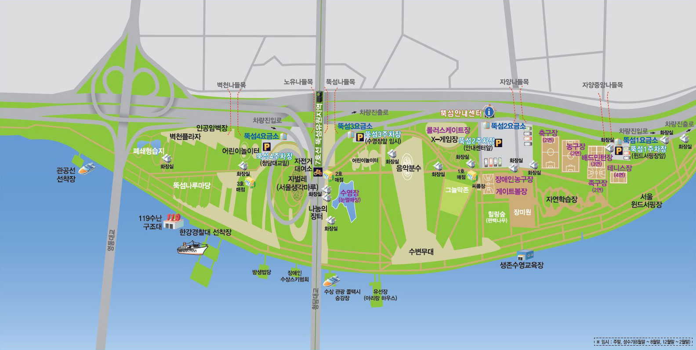

공원정보 뚝섬한강공원 강서한강공원 광나루한강공원 난지한강공원 뚝섬한강공원 망원한강공원 반포한강공원 양화한강공원 여의도한강공원 이촌한강공원 잠실한강공원 잠원한강공원  한강공원이 조성되기 이전부터 강변유원지로 유명했던 곳입니다. 수상에서는 시원한 바람을 맞으며 낭만과 젊음을 만끽할 수 있는 윈드 서핑, 수상스키, 모터보트 등 수상스포츠가 활발하게 이루어지고 있습니다.
날씨 뚝섬한강공원 강서한강공원 광나루한강공원 난지한강공원 뚝섬한강공원 망원한강공원 반포한강공원 양화한강공원 여의도한강공원 이촌한강공원 잠실한강공원 잠원한강공원 OO구 OO동 10/24(화) 20˚C 오후 4시 21˚ 오후 5시 20˚ 오후 6시 18˚ 오후 7시 17˚ 미세먼지 좋음 28㎍/m³ 초미세먼지 좋음 15㎍/m³ 습도45% 바람남서 2m/s
공원리뷰 1% 부족한 공원 ★★★★★ 정말 다 좋은데 뭔가 부족해요~ 주말에 항상 들릅니다. ★★★★★ 혼자 산책하고 운동하기 좋아요~ 벌레 많음 ★★★★★ 날이 선선해서 그런건지 방역을 안 하는건지... 달리다가 입에 벌레 들어갈 뻔했네요 분수가 예뻐요 ★★★★★ 밤에 가면 정말 보기 좋네요~ 나쁘지 않습니다 ★★★★★ 집 근처에 있어서 아이들 데리고 자주 오게 되네요. 더보기